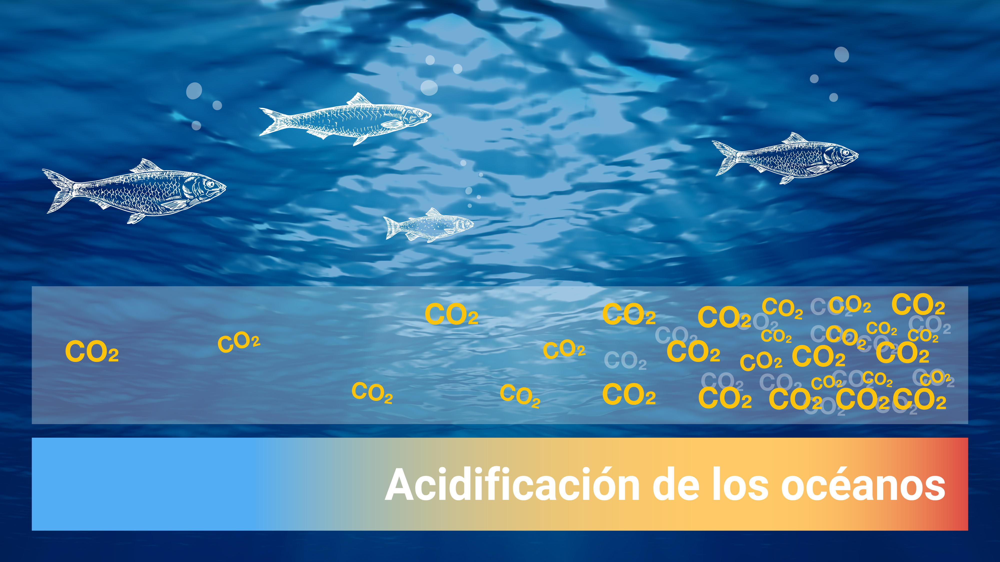

CICLOS QUÍMICOS

Los ciclos químicos marinos, también conocidos como ciclos biogeoquímicos marinos, son las vías por las que los elementos químicos circulan
en el medio marino. Estos ciclos son esenciales para la vida marina y afectan al clima global.
Ciclos Marinos:
- Ciclo De Carbono:El océano es un importante sumidero de carbono atmosférico, absorbiendo dióxido de carbono y
contribuyendo a la regulación del clima. El carbono se mueve entre la atmósfera, el océano y los organismos marinos a través de
procesos como la fotosíntesis y la respiración.
- Ciclo De Fosforo:El fósforo es otro nutriente vital para los organismos marinos, formando parte de las moléculas como el ADN y el ARN.
Se introduce en el océano a través de la erosión de rocas y es reciclado por los organismos marinos.
- Ciclo De Nitrogeno:El nitrógeno es esencial para la construcción de proteínas y ADN en los organismos marinos.
Se convierte en formas utilizables para los organismos a través de procesos como la fijación del nitrógeno y la nitrificación.